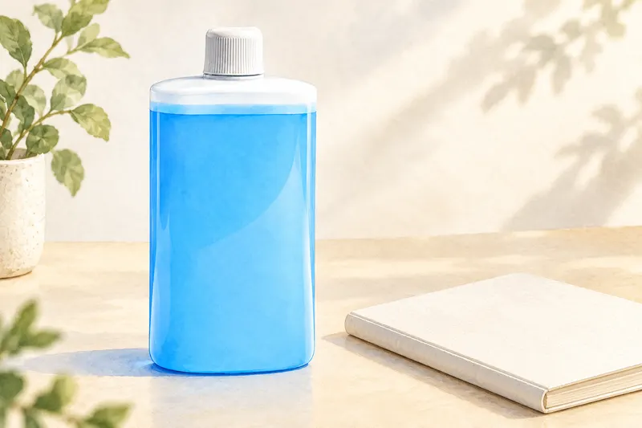
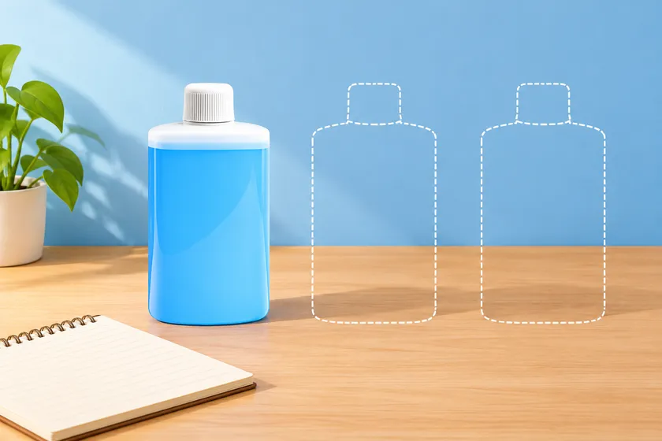
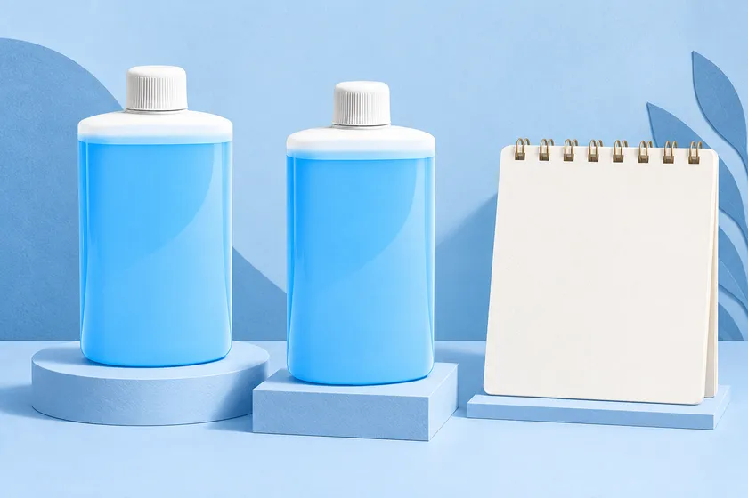

로보락 (Roborock)
로보락 정품 세제 1L, 1병·2병 구매 수량 계산
글·구성: 제이상점 · 기종별 1:1 호환 실물 점검 · 교체 주기 비교표 · 스마트스토어 패키지 안내

핵심 관리 · 선택 체크포인트
- 판매자 안내｜제이상점이 공식 자료와 현재 판매 옵션을 조사해 직접 작성했습니다.
- 1병을 살지, 복수 구매 옵션으로 2병을 살지 고민될 때는 할인 문구보다
- 상품 이미지의 세제 병 형태와 색상을 참고한 구성 예시입니다.
- 개봉 병에 남은 원액, 아직 개봉하지 않은 여분, 이미 주문한 수량을 나누어 메모하세요.
- 계산에 넣기 전에는 실제 병의 사용기한과 보관 안내도 확인해 주세요.
실물 부품 디테일 · 관리 구성 이미지




부품 규격 · 점검 기준표
| 가상 계산 상황 | 추가 필요 원액 | 현재 1L 옵션에 대입 |
|---|---|---|
| 예상 400mL / 보유 600mL | 0mL로 처리 | 추가 구매 보류 |
| 예상 800mL / 보유 200mL | 600mL | 1병이면 계산상 충족 |
| 예상 1,600mL / 보유 200mL | 1,400mL | 2병이면 계산상 충족 |
💡 교체 주기가 겹치는 필터·브러시·물걸레·더스트백은 단품 배송비를 여러 번 내기보다 로보락 세제 기간별 세트(3개월·6개월·1년)로 미리 구비해 두면 물세척 후 24시간 교대 건조까지 끊김 없이 관리할 수 있습니다.
자주 묻는 질문 (FAQ)
Q. 로보락 정품 세제 1L의 예상 400mL / 보유 600mL 규격과 관리 기준은 무엇인가요?
A. 0mL로 처리 규격을 사용하며, 추가 구매 보류 기준으로 점검·교체하면 청소 효율을 안정적으로 유지할 수 있습니다.
Q. 로보락 정품 세제 1L의 예상 800mL / 보유 200mL 규격과 관리 기준은 무엇인가요?
A. 600mL 규격을 사용하며, 1병이면 계산상 충족 기준으로 점검·교체하면 청소 효율을 안정적으로 유지할 수 있습니다.
Q. 로보락 정품 세제 1L의 예상 1,600mL / 보유 200mL 규격과 관리 기준은 무엇인가요?
A. 1,400mL 규격을 사용하며, 2병이면 계산상 충족 기준으로 점검·교체하면 청소 효율을 안정적으로 유지할 수 있습니다.
제이상점 1:1 검수 추천 패키지 · 구매 안내
☑️ 주문 전 확인해 두면 좋은 제이상점 안심 포인트
· 기종별 1:1 전용 규격 검수: 모델명·연식에 맞는 호환·정품 구성을 검수해 오주문 불안을 줄였습니다.
· 해외직배송 미리 주문 팁: 중국 구매대행·해외직배송 상품이므로 마지막 여분 1개를 꺼내 쓰는 시점에 개인통관고유부호와 함께 여유 있게 주문해 두시면 훨씬 경제적인 비용으로 끊김 없이 교체하실 수 있습니다.
· 기종별 1:1 전용 규격 검수: 모델명·연식에 맞는 호환·정품 구성을 검수해 오주문 불안을 줄였습니다.
· 해외직배송 미리 주문 팁: 중국 구매대행·해외직배송 상품이므로 마지막 여분 1개를 꺼내 쓰는 시점에 개인통관고유부호와 함께 여유 있게 주문해 두시면 훨씬 경제적인 비용으로 끊김 없이 교체하실 수 있습니다.
📖 더 많은 가정 내 사용 스토리와 상세 후기가 궁금하시다면
📱 네이버 블로그 모바일 원문 보기 ↗